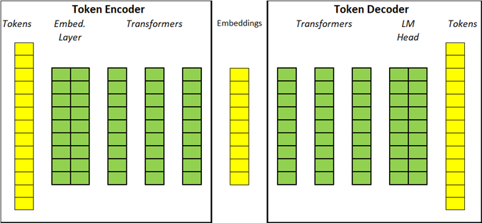
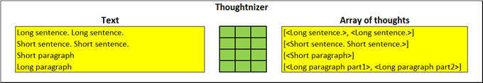
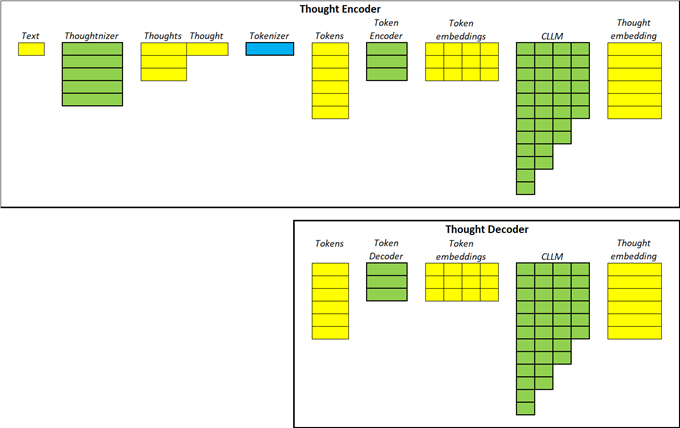
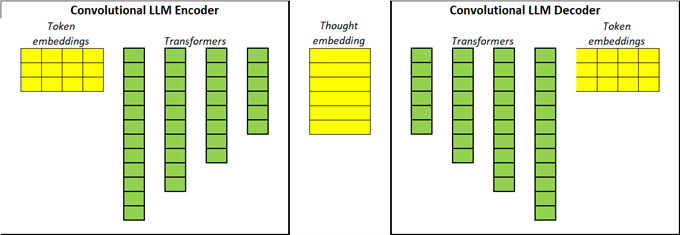
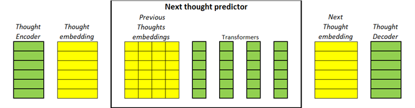
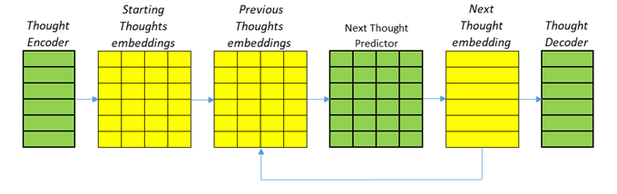
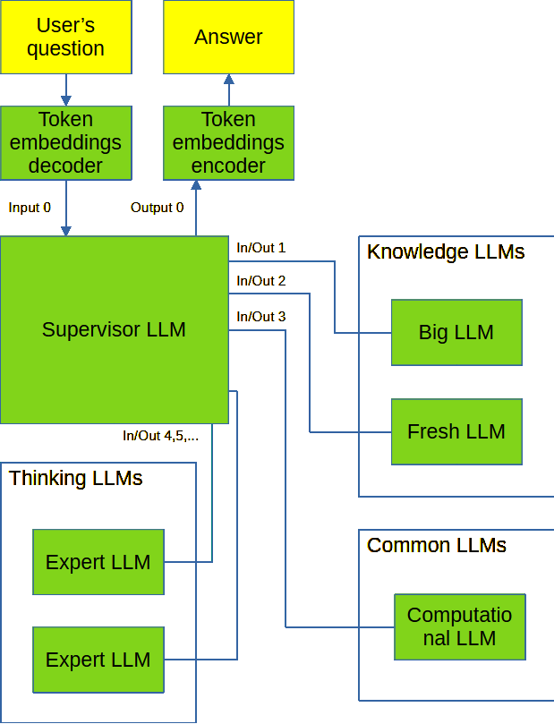

“The mind is not a vessel to be filled, but a flame to be lit” Lucius Mestrius Plutarchus
This article presents an engineering perspective on designing a Large Language Model (LLM) capable of genuine understanding and reasoning, rather than merely predicting tokens. The author critiques current LLMs for their limitations, including token-based prediction, lack of explicit thought representation, inability to separate knowledge from facts, absence of short-term memory, and inefficiency in scaling.
To address these issues, the author proposes a modular architecture where distinct neural networks handle different cognitive functions:
Key innovations include:
This framework aims to move beyond statistical token prediction toward a system that emulates human-like understanding, reasoning, and adaptable learning. Future work involves experimental validation and refining model interactions.
Perhaps the human brain has a homogeneous unified structure and it works, we know that it can think. But this is definitely not the result of the design of a higher intelligence, it just happened that way. Perhaps due to its universality, evolutionary development and growth from literally one cell with a limited set of genes, it is simply impossible to obtain another result. Perhaps an attempt to build AI on a homogeneous unified structure of transformers will also bring the long-awaited result. If you try long enough, something will work out. But unlike the human brain, we design what the neural network will look like ourselves and we do it consciously. We do not necessarily pile up hundreds of billions of neurons in the form of many transformers and train it all on trillions and trillions of tokens. Not necessarily even if it works as a result. We, as engineers, can try to make it simpler, faster, more accurate, cheaper. To do it without interfering much with the internal structure of the neural network itself. Let there be transformers if they are the best that exists at the moment.
What disadvantages does the author see in the current LLMs:
Despite the fact that the process of thinking in humans is closely connected with speech and words are not the same thing. Even before the advent of speech, our distant ancestors thought their simple thoughts quite well. Just like a small child, not yet mastering speech, is able to interact with the surrounding world and comprehend its laws. Speech is a means of communication, a means of transmission, a means of preserving thought and its results. The thought of one person generates a set of words that creates the same thought in the head of another person. But these two learned to think each on their own and without words. Modern LLMs at the pretraining stage learn to predict the next token, the next word in human terms. As a result, LLMs will learn to understand how languages are structured, which words are more often used with each other. But it is absolutely necessary that they are aware of the thought that the sequence of tokens carries, and therefore will not learn to think and will remain just a statistical parrot.
Datasets with trillions or even tens of trillions of tokens are used for training. Otherwise, it is impossible with current training methods. A small dataset size is not suitable for a large-sized model. Increasing the size of neural networks requires increasing the size of datasets used for training. Soon, all the texts generated by humanity will not be enough. And when there are so many tokens, it is impossible to even think about influencing the learning process by selecting educational materials in training datasets, similar to how human education selects textbooks and educational programs.
For each input token, LLM finds a match in the form of an embedding vector of this token. As a result, we have a set of such embeddings, but no embedding of the entire thought. We can add up the token vectors and get the resulting vector. This can even be used to search for similar meanings, but not by semantic similarity. Probably somewhere inside the transformers, in the process of calculating the embeddings of tokens, an embedding of the entire thought is formed, but we cannot know what layer or layers it is, we cannot get these numerical values to perform any operations on them.
Any person in the process of thinking is able to distinguish to some extent between knowledge, which can mean a model of the world, something common between different entities, and facts, which can mean certain values. The ratio of mass, density and volume is knowledge. A table of densities of different substances is facts. Understanding the concept of price, buying and selling is knowledge, a set of current prices is facts. The author is not sure that modern LLMs see/understand this difference, at least for the reason that knowledge and facts require neural networks of different configurations. Facts do not require a lot of nesting, but you need a lot of parameters to remember everything and learn it all for a long time. And a model of the world requires many layers of transformers to identify connections and dependencies. Modern LLMs are not like neural networks for facts, but like an Internet archive with the hope of developers that the neural network will also build some kind of model for understanding in the process of memorization.
Lately, every vendor is creating thinking LLMs. The output of these models is statements, text, token sequences that logically follow each other. On the one hand, this is a big step forward, but on the other hand, this approach requires converting embeddings into tokens and reloading them on the next iteration. This eliminates any thinking that cannot be expressed in tokens. This approach loses the information of floating-point values in embeddings when translating to discrete tokens. How to make ASI if its thinking is limited to human tokens/words/concepts?
The model does not know what it was thinking in previous iterations, or whether it is going in circles. Tokens generated during thinking are used as short-term memory. There is no mechanism to transfer thoughts, conclusions, and results from one session to another, except to transfer the entire text of this dialogue. But what if there are many such dialogues? What if they are not related to each other?
How do engineers (and others) build complex systems? They divide them into parts, into components. Each such module performs its function optimally. And to obtain the desired result, they connect these parts with each other. Modern LLMs are not designed like that at all. They are one large, almost homogeneous monolith, which, although it achieves impressive results, does so at great expense, does not scale, and is difficult to understand, diagnose, and fine-tune.
Now texts consisting of words are converted into tokens. Then the tokens are fed to the input of LLM, which converts them into embeddings. An embedding can be considered a vector in a certain space of meanings. Each token (a word in human understanding) is assigned a vector that reflects the meaning of the token in a given context. Pre-training is carried out by predicting the next token.
We will do the same. All texts involved in training are fed to the tokenizer input and on the resulting tokens we will train the encoder and decoder simultaneously by predicting the next token. Both the encoder and decoder represent a sequence of transformers. At first glance, this is no different from the pre-training of a regular modern LLM. In terms of architecture, it is no different. But it differs in purpose and methods. We do not seek to teach knowledge or understanding of texts by predicting the next token. We only want to teach understanding of the language. We need a token-to-embedding converter. The size of such a neural network will be significantly smaller than the size of modern LLMs both in the number of transformer layers and in the size of the embedding vector. The corpus of texts will be insignificant, the most common simple books and basic textbooks are enough to understand the language, foreign language textbooks are especially well suited, because they are created for this very purpose - to explain how a foreign language works. It would be really good if all possible tokens were found there. There is no need to worry about the small text corpus used for training, about unclear patterns in the texts, about the knowledge not acquired. This is just the first stage, it is fast and inexpensive due to the limited text corpus and the small size of the neural network. We need to start somewhere, and a basic understanding of the text is enough for this. The specific characteristics of the encoder and decoder - the dimension of the embedding vector and the number of transformer layers - need to be determined experimentally.

Diagram 1. Receiving token embeddings.
What is a unit of thought in a text? A sentence? Several sentences? A paragraph? How to select a set of tokens/embeddings that make up a thought? In the most ideal case, the text should be broken down into thoughts by another person. But this option does not seem feasible. A good option would be to break the text into thoughts using another neural network. But if there is no time or resources to train a neural network, then we can take a sentence as a unit of thought. This is actually not far from the truth. If the sentence is too short, then you can combine several such short sentences together and consider them as a thought.

Diagram 2. Breaking down text into thoughts
So we have an array of token embeddings. How to understand their meaning, how to transform their thought, how to get one group embedding instead of an array of embeddings, but for the entire set of tokens. If we translate this into human language - how to put a sequence of words into a thought. This is possible, we do it every moment when we read something or talk to someone. We usually have no doubts about what thoughts are contained in the text, in which of its fragments. We can recreate a fragment of text not because we have learned it, but because we have understood the thought and can translate it into words so that they retain the same meaning, even if it is a slightly different set of words in a different sequence.
An astute reader will immediately notice that if the dimension of token embeddings is large, but quite finite, because there are not so many words and their meanings, then the dimension of thought embedding will be huge, because there are incomparably more possible thoughts and the dimension of the space of meanings for them will be larger. What should be the size of thought embedding for a large novel of several hundred pages? How can such a huge neural network be trained? I completely agree with this opinion. But we do not need big thoughts. We will combine small sets of tokens into simple thoughts. And just as the number of words is limited, the number of their basic meanings, basic thoughts, will also be limited.

Diagram 3. Transforming token embeddings into thought embeddings
To make a thought embedding from an array of token embeddings, a convolutional LLM is needed. The author believes that such an LLM made using the same architecture as the LLM for tokens will have to learn not only to understand the structure of the language, but also the meaning of the set of tokens. Otherwise, it will be impossible to reduce the dimensionality of vectors. Similar to the size of the context of LLM built on tokens, we introduce the maximum size of the token window for thoughts. It will be significantly smaller than the window size of the LLM now, because a thought is a sentence, a paragraph, a page, and not thousands of words as it is now. The total size of such an array of vectors is equal to
We train encoder and decoder simultaneously. The first transforms a sequence of token embeddings into a single embedding, and the second restores the original token embeddings. The error is calculated from the difference in embeddings at the input of the encoder and at the output of the decoder of the same thought/set of tokens. This differs from token-based LLM training, where the next token is predicted, not the current one. Understanding, encoding of thought should be done by passing text through the bottleneck of the encoder.

Diagram 4. Possible design of a convolutional LLM
So we have an encoder consisting of a serially connected token encoder and a thought encoder, which “understands” a fragment of text and transmits this understanding in the form of embedding to a decoder, which also consists of two serial decoders and is able to restore the original set of tokens. Let's try to teach this text-understanding neural network to think. What is thinking in the terminology we use? It is the prediction of the next thoughts based on the previous ones.
Let's add another layer to the encoder chain. Such an encoder layer will accept the current thought and output the next one. The decoder does not need to be changed, because it will perform its task of transforming thought embeddings into token embeddings and into the tokens themselves in the same way as before. This is similar to how LLMs are trained now and how we trained the token embedding subsystem - predicting the next one, but not a token, but a thought embedding. The error function should be considered the difference between the vectors of the predicted and actual thought.
Let's complicate and expand the task a little. Let's predict the next thought not only by the previous thought, but by several previous ones. Let's introduce the size of the context for thoughts, we also have the size of the context for tokens. And the predictive model will also be made on transformers. The thought window can be either floating and include the last N thoughts or start from a certain place, from the beginning of a chapter or a scientific article. The optimal method for each type of text will need to be determined experimentally.

Diagram 5. Predicting the next thought
So we have a neural network that can predict the next thought based on N previous ones. How can we make a thinking model out of this? It is enough to feed a fragment of text that will launch the thinking process to the input, this fragment will be transformed into embeddings of meanings, will go to the input of the predictive subsystem, which will calculate the embedding of the next thought. As a simple example, this can be the answer to the question asked. Then this embedding is added to the array of launching embeddings and again fed to the input of the predictive model. As a result, we get a thinking process launched by the initial text, which does not use either a decoder or tokens at all. It does not need human language. We can use the decoder to see what is happening inside and / or get the final result, but the model itself does not need this.
A sequential set of embeddings of predicted thoughts performs the function of short-term memory. It is possible to train a neural network so that over time it summarizes the sequence of reasoning, selects the result that it considers correct and ready, and leaves at the input of the predictive model only the initial task, such intermediate conclusions, and the last N thoughts in the full set. This will allow for long and deep reflections without increasing the volume of calculations and saving intermediate results for pausing and then resuming work.

Diagram 6. Thinking model
Without experimental verification, it is impossible to know whether the above-described idea of a thinking model will work in principle and, if so, whether it will achieve the required accuracy. To evaluate, you do not need to train the model on the entire available corpus of texts. You can and should try to use the method proposed in another article - https://github.com/loftyara/LLMagogy We will call the resulting model the Basic Model. Just as the engineering approach encourages us to divide a large neural network into several networks/subsystems, it also tells us not to make one universal neural network. In this world, everything universal is imperfect - too big, slow, expensive, inaccurate. The best result is obtained by combining various specialized solutions, while built on common foundations and platforms. This is the function that the resulting basic model will perform.
So, we have a basic compact model trained on a limited text corpus. We will train many follower models on its basis. We will fix and will not change that part of the neural network, those parameters that are responsible for converting tokens into embeddings and vice versa. We need different LLMs to be able to communicate with each other somehow. The ideal option would be to exchange thought embeddings, but the author, due to insufficient education and intellectual abilities, does not yet see how this could be done. The option of communicating using tokens is always possible, but let's try to make at least token embeddings the language of communication, suddenly we will see our own language of neural networks, obtained implicitly during the training process. The maximum context size will also remain unchanged, otherwise we will face incompatibility of models.
LLMs are characterized by the size of the embedding vectors (thought embeddings in our case) and the number of transformer layers inside model. LLM derivatives of the base model will have larger values of these parameters. We should try to train the base model without redundancy, and therefore, in order to put new data and connections there, we will need to increase the size of the model. Increasing the size of the embedding vector expands the space of meanings and allows the model to remember more information. The larger the vector size, the more the model can remember. Increasing the number of transformer layers is more likely associated with connections between tokens, thoughts, and embeddings. The more layers, the more complex dependencies and connections they can find, the more complex thoughts they can think.
The first model to be trained is a large LLM, similar to the currently existing LLM. A huge text corpus will be used for training. The embedding vector sizes will need to be significantly increased. But the number of layers does not need to be significantly increased, this model does not need to be smart, it needs to remember, learn facts.
Now, at the beginning of 2025, some advanced models are trained on texts collected before 2023. That is, LLM is lagging behind by a year and a half. This is due to the duration and cost of training the model. Perhaps this is an inevitable consequence of the transformer architecture. To overcome the limitation of data staleness, in addition to the large model, an additional similar model will be required that knows only about recent events, texts, discoveries.
Small expert models, slightly different from the basic model in the size of the embedding vector, but having a larger number of layers. The task of these models is to understand, to be an expert in a certain area of human activity. For example, to know some science or combination of sciences, to know certain technologies, production, etc.
These are specialized models, but intended rather for others, primarily expert LLMs, and not for humans. An example of such a model is a computational model that generates code that performs certain calculations, which allows combining, connecting together both thinking and classical computer calculations.
The last and most important family of models in a single copy. This is the most complex model, it must simultaneously know a lot and think deeply. An analogue of this in the world of people can be a human encyclopedist, a universal thinker, such as Leonardo da Vinci. It is this model that interacts with a human - accepts questions and tasks from him and gives answers and solutions.
To generate such answers (if necessary), the model calls on the Big and Fresh LLM for facts and/or calls on expert LLMs. It decides which LLMs to use, when to stop generating an answer, which answers to prefer, and how to form the final result. This model is also responsible for the interaction of different LLMs with each other during the request processing process, for dispatching their requests.
Tokens from the user are converted into embeddings and fed to the input of Supervisor LLM. The output of Supervisor LLM is converted back into tokens and is the answer to the task. Information exchange between models is performed using token embeddings. For diagnostics and understanding of the thinking process, these embeddings can be converted into tokens, but this is not required for the operation of the models themselves. Perhaps, in the process of training models, a model language based on token embeddings will appear, inheriting them, but which will no longer be convertible into tokens. How to train/learn such interaction of models will be described in the next chapter.

Diagram 7. Interaction of models
All LLMs except Supervisor do not require any non-standard or additional training. Their job is to understand the tokens they receive and generate an optimal response from their point of view, as if they were the only LLM and were giving the best response they could.
The Supervisor LLM controls the interaction with users and between models. The LLM has a number of inputs/outputs equal to the number of LLMs used + 2. Input number 0 refers to interaction with the user. Output number 1 is for cases when the obtained result should not, maynot be reported because it violates the internal policy of the company owner of the LLM. Output number 1 is used for Alignment. Connection number 2 belongs to the Big LLM, connection number 3 belongs to the Fresh LLM and connection number 4 belongs to the Calculating LLM. Connections starting with number 5 are for existing expert and general models.
Supervisor LLM accepts the text from the user, converts it into tokens and their embeddings, and then must decide to which of its outputs to send this array of embeddings. Perhaps it would be correct for Supervisor LLM to add some text from itself, but for now we will stop only at the output selection. We will introduce a rule that the output connection number should not coincide with the input connection number. We believe that other LLMs have already done what they could, got the best result, and there is no point in returning the same embeddings to them again. The called LLM processes the request and returns its own array of token embeddings. Supervisor LLM adds these embeddings to the previous ones and re-determines the next output. Thus, the process of generating a response looks like a sequential call to different LLMs with the accumulation of embeddings. The completion of Supervisor LLM is the selection of the next output with the number 0 or 1 or exceeding the maximum permissible number of iterations.
If the next output is 0, it means that the LLM Supervisor thinks that the answer to the user is ready. The answer can be either the answer of the last LLM (the last few LLMs) or the entire thinking process. If the next output is 1, it means that the LLM Supervisor thinks that the answer is not allowed according to the LLM owner's policy and will give some standard text as an answer without explaining the reasons.
This division into several models with different purposes significantly increases the safety of neural networks and AI for humans and humanity. We do not have a single model that could become ASI. The Big LLM knows everything, but it is stupid, it just knows. Expert models can be very smart, but they know little and have a narrow specialization. A Supervisor LLM can be both smart and educated, but firstly, it is not necessary to make this model large, and secondly, all it can do is choose which model to call next.
Output number 1 is a black hole. If the Supervisor LLM chooses it, there will be no result. At the same time, it is enough for such a choice to be made once in the process of generating an answer for the result not to be obtained. At any stage of thinking, the entire process will be blocked. Therefore, alignment is sufficient to apply only to the Supervisor LLM and there is no need to apply it to other models.
All models except Supervisor LLM do not require special training. They simply receive an array of embeddings as input and create a resulting array of embeddings, i.e. they work as expected without additional training. Supervisor LLM will require additional layers that will select the correct output as in classification problems.
At the first stage of training, you can limit yourself to automatic tagging of examples based on the area of knowledge the text belongs to and how complex it is. For more complex examples that require a certain sequence of calling models, manually tagged data will be required.
continue on github